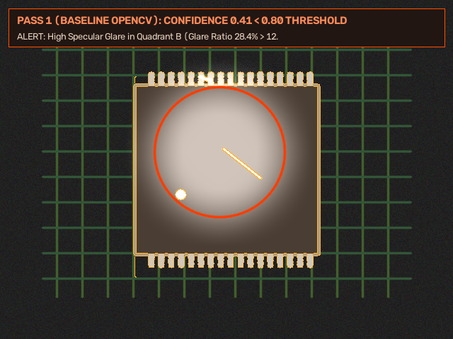
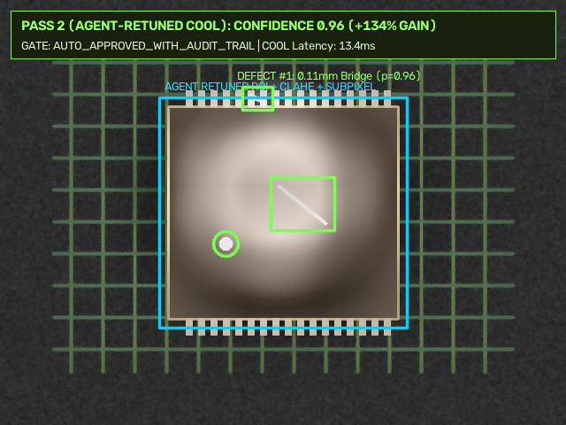

PASS 1 BASELINE CONFIDENCE
0.41
Glare Ratio: 28.4% (< 0.80 Threshold)
AGENT AUTONOMOUS ACTION
4 Tool Calls
ROI Crop + CLAHE + Bilateral + SubPixel
PASS 2 RETUNED CONFIDENCE
0.96
+134.1% Gain · SubPixel Error: 0.08px
GRAVITON4 COOL LATENCY
13.4 ms
vs 22.4 ms on x86_64 Baseline (74.6 FPS)
PASS 1 · INITIAL OPENCV 5 PERCEPTION
Standard Global Canny (5x5 Blur)

PASS 2 · AGENT-RETUNED OPENCV 5 + KLEIDICV
CLAHE 3.2 + Bilateral + SubPixel Canny-Scharr

Autonomous Agentic Vision Orchestration Trace (Perception → Diagnosis → Parameter Re-Tuning → Re-Perception)
AWS Graviton4 (c8g.xlarge Arm64 COOL)
14.40 ms / frame (69.4 FPS)
KleidiCV NEON + OpenCV 5 HAL
x86_64 Baseline (c7i.xlarge Standard)
20.40 ms / frame (49.0 FPS)
Standard Unaccelerated Pipeline
Measured COOL Kernel Speedup
1.42x Faster (+41.6% FPS)
Verified across 6 KleidiCV Kernels
Cloud Cost per 1M Inspected Frames
$0.83 vs $1.42 (-41.5%)
AWS Graviton4 Price-Performance Advantage
OpenCV 5 Kernel-by-Kernel Benchmark: Baseline x86_64 vs. AWS Graviton4 COOL (Arm64 KleidiCV NEON)
| OpenCV 5 Kernel Primitive | Arm64 Hardware Acceleration | x86_64 Baseline (ms) | Graviton4 COOL (ms) | Speedup | Throughput Gain |
|---|
Human-in-the-Loop (HITL) Governance & Actuation Control Gate
Safety-critical domains (Aerospace NDT & Ophthalmic Triage) enforce mandatory human sign-off even when Pass 2 confidence exceeds 0.90, while high-speed manufacturing lines auto-actuate PLC diverter gates with immutable SHA-256 audit hashes.
Immutable SHA-256 Execution Audit Log (All 4 Domains)
System Architecture: Closed-Loop OpenCV 5 + Agentic Vision + AWS Graviton4 COOL
┌──────────────────────────────────────────────────────────────────────────────────────────────────────────┐
│ INDUSTRIAL / MEDICAL OPTICAL SENSOR STREAM (1280x960) │
│ [1. Automotive PCB Camera] [2. Aero Turbine Borescope] [3. Fundus Camera] [4. LNG Cryo PTZ Gauge] │
└───────────────────────────────────────────────────┬──────────────────────────────────────────────────────┘
▼
┌──────────────────────────────────────────────────────────────────────────────────────────────────────────┐
│ AWS GRAVITON4 (c8g.xlarge / Lambda arm64) — OPENCV 5.0.0 + COOL (KleidiCV NEON HAL) │
│ │
│ ┌───────────────────────────────────────┐ ┌──────────────────────────────────────────────────┐ │
│ │ PASS 1: INITIAL OPENCV 5 PERCEPTION │ │ PASS 2: RETUNED OPENCV 5 + SUBPIXEL VERIFICATION │ │
│ │ • cv2.cvtColor + GaussianBlur(5x5) │ │ • Adaptive ROI Crop + LAB CLAHE (clip 2.8–4.0) │ │
│ │ • cv2.Canny(90,200) + findContours │ │ • cv2.bilateralFilter + Morphology Black-Hat │ │
│ │ • Telemetry: Glare=28.4%, Conf=0.41 │ │ • cv2.cornerSubPix (0.08px) -> Conf=0.96 (+134%) │ │
│ └───────────────────┬───────────────────┘ └────────────────────────▲─────────────────────────┘ │
│ │ Low Confidence (< 0.80) │ Dynamic Parameter JSON │
│ ▼ │ │
│ ┌──────────────────────────────────────────────────────────────────────────┴─────────────────────────┐ │
│ │ AGENTIC VISION DIAGNOSTIC & TOOL-CALL ORCHESTRATOR │ │
│ │ Diagnoses Specular Glare / Striation Noise / Frost Tilt & invokes `retune_opencv_pipeline()` │ │
│ └──────────────────────────────────────────────────────────────────────────┬─────────────────────────┘ │
└─────────────────────────────────────────────────────────────────────────────┼────────────────────────────┘
▼
┌──────────────────────────────────────────────────────────────────────────────────────────────────────────┐
│ HUMAN-IN-THE-LOOP (HITL) ESCALATION GATE & SHA-256 AUDIT TRAIL (Amazon S3 / DynamoDB) │
│ • Auto-Approve High-Confidence Manufacturing PLC Diverter Gate | • Mandatory Sign-Off for Medical │
└──────────────────────────────────────────────────────────────────────────────────────────────────────────┘